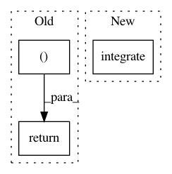

5524ed3cc7fb7be35d75657a3f8e620ae9a40d1a,osim/env/osim.py,OsimEnv,step,#OsimEnv#Any#,174
Before Change
self.osim_model.state = self.manager.integrate(self.stepsize * (self.istep + 1))
except Exception as e:
print (e)
return self.get_observation(), -500, True, {}
self.istep = self.istep + 1
res = [ self.get_observation(), self.compute_reward(), self.is_done(), {} ]
After Change
def step(self, action):
self.osim_model.actuate(action)
self.osim_model.integrate()
return [ self.get_observation(), self.reward(), self.is_done() or (self.osim_model.istep >= self.spec.timestep_limit), {} ]
def render(self, mode="human", close=False):
return
In pattern: SUPERPATTERN
Frequency: 3
Non-data size: 3
Instances
Project Name: stanfordnmbl/osim-rl
Commit Name: 5524ed3cc7fb7be35d75657a3f8e620ae9a40d1a
Time: 2018-03-24
Author: lukasz.kidzinski@gmail.com
File Name: osim/env/osim.py
Class Name: OsimEnv
Method Name: step
Project Name: stanfordnmbl/osim-rl
Commit Name: 1e0053e2f0da5dea3d2c2721053dcfb0d07cba75
Time: 2019-10-05
Author: ssm0445@gmail.com
File Name: osim/env/osim.py
Class Name: L2M2019Env
Method Name: step
Project Name: scipy/scipy
Commit Name: 0131d72f0f7a5c13f00961aea054094b2b78f071
Time: 2016-10-12
Author: evgeny.burovskiy@gmail.com
File Name: scipy/interpolate/fitpack.py
Class Name:
Method Name: splint